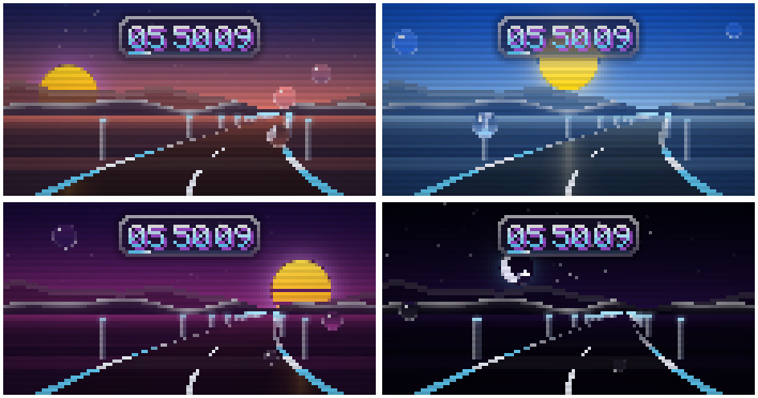

Liquid Glass
A macOS / iOS-inspired look for Omarchy: rounded squircle windows, frosted blur behind everything, translucent terminals and springy animations. In dark, light and a warm sepia variant that's easy on the eyes.
~ ❯ omarchy theme set "Liquid Glass Dark" Applying theme… ✓ hypr ✓ shell ✓ term ~ ❯ ls themes/ liquid-glass-dark liquid-glass-light liquid-glass-warm ~ ❯ git log --oneline -2 ad64b3f Add warm sepia variant and sepia web d11c99e Turn the screensaver into a drive ~ ❯ palette
Pick your glass
Every variant ships its own palette, wallpapers, terminal colors and shell styling. Click one to preview it on this page.
Squircle windows
18px rounding with a squircle curve, a thin light rim and soft layered shadows.
Frosted blur
Blur behind windows, the bar, menus, notifications and the OSD, with a touch of vibrancy.
Crisp translucent terminals
Transparency comes from foot, Alacritty, kitty or Ghostty itself, so text stays sharp.
Springy motion
An iOS-like spring curve for windows popping in, layers fading and workspaces sliding.
Apple-style palettes
System colors for dark and light, plus an earthy palette for the warm variant.
Original wallpapers
Soft gradient wallpapers for every variant, plus a synthwave Omarchy one in dark.
Three commands
Clone the repo, copy the themes into place and apply the one you like.
Open a new terminal window afterwards to see the translucent background.
Why not omarchy theme install?
For safety, Omarchy strips hyprland.lua and terminal configs from themes installed as git clones. That's exactly where the blur, rounding and transparency live, so install.sh copies the themes into ~/.config/omarchy/themes instead.
Read the files before installing — hyprland.lua is executed by Hyprland.
Tweaking
| Blur | Rounding, shadows, opacity and animations in hyprland.lua |
| Bar | Menu and notification translucency in shell.toml |
| Colors | Palette in colors.toml |

A drive through glass
A night drive down a wet glass road past frosted mountains, with raindrops on the windshield and a pixel clock in the sky. The sky follows the real time of day.
retro | Stylised synthwave day that follows the clock |
sun | The real sun and moon for your location, fully offline |
Plain Python 3.11+, no extra packages. It runs only while a Liquid Glass theme is applied.
Sepia web pages
White web pages can glare next to the warm theme. Sepia Web for Chromium and Chrome swaps white backgrounds for the theme's parchment color. Images, videos, gradients and dark sites stay untouched, and it only acts while Liquid Glass Warm is applied.
- Run
./sepia-web/install.sh - Open
chrome://extensionsand enable Developer mode - Click Load unpacked and pick
sepia-web/extension
A tiny native helper tells the extension which Omarchy theme is active. No sudo, no browser policies.
Reading on a white page
Bright white backgrounds are tiring at night. The extension tints them to match your desktop while keeping light-grey shades a step darker, so the layout stays readable.
Included with Dark
Generated with ImageMagick and free to use. Switch variants at the top to see the others.